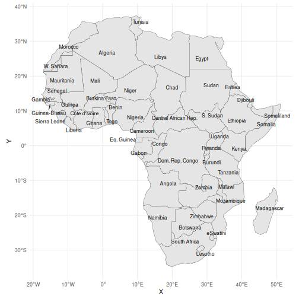
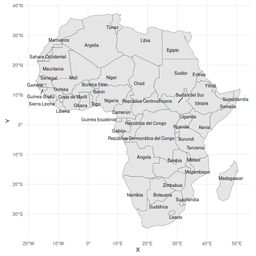
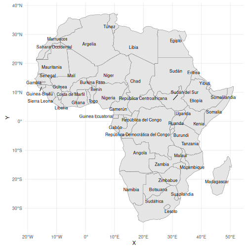

This vignette shows how rnaturalearth makes it easier to make maps with labels in languages other than Engish, and to make thematic maps if you have data that is referenced in languages other than Engish.
rnaturalearth is an R package to hold and facilitate interaction with natural earth vector map data.
Natural Earth is a public domain map dataset including vector country boundaries.
Country maps with labels in other languages
# Africa
terra::plot(ne_countries(continent = "africa"))
#> Warning: plotting the first 9 out of 168 attributes; use max.plot = 168 to plot all
sfaf <- ne_countries(continent = "africa", returnclass = "sf")
sfafc <- st_centroid(sfaf)
#> Warning: st_centroid assumes attributes are constant over geometries
#> Warning in st_centroid.sfc(st_geometry(x), of_largest_polygon = of_largest_polygon):
#> st_centroid does not give correct centroids for longitude/latitude data
sfaf <- cbind(sfaf, st_coordinates(st_centroid(sfaf$geometry)))
#> Warning in st_centroid.sfc(sfaf$geometry): st_centroid does not give correct centroids for
#> longitude/latitude data
# this adds centroids in the middle of countries
ggplot(sfaf) +
geom_sf() +
geom_sf(data = sfafc)
# trying labels in the middle of countries, doesn't quite work needs x,y,label
# but once x & y added on with st_coordinates ... seems getting the coords might
# not be necessary for much longer https://github.com/slowkow/ggrepel/issues/111
# cool nearly there ...
ggplot(sfaf) +
geom_sf() +
geom_text_repel(aes(x = X, y = Y, label = name), size = 3)
# getting there, labels still overlap a bit maybe make map bigger to allow space
# for labels
ggplot(sfaf) +
geom_sf() +
geom_text_repel(aes(x = X, y = Y, label = name_es), size = 3)
# point.padding=NA allows labels to overlap the centroid
ggplot(sfaf) +
geom_sf() +
geom_text_repel(
aes(x = X, y = Y, label = name_es),
point.padding = NA,
size = 3
)
# Africa labels just down left & right sides works pretty well I think
ggplot(sfaf) +
geom_sf() +
xlim(-28, 61) +
geom_text_repel(
aes(x = X, y = Y, label = name_es),
data = subset(sfaf, X > 21),
nudge_x = 60 - subset(sfaf, X > 21)$X,
segment.size = 0.2,
segment.color = "grey50",
direction = "y",
hjust = 0,
size = 3
) +
geom_text_repel(
aes(x = X, y = Y, label = name_es),
data = subset(sfaf, X < 21),
nudge_x = -19 - subset(sfaf, X < 21)$X,
segment.size = 0.2,
segment.color = "grey50",
direction = "y",
hjust = 1,
size = 3
)
# french labels
ggplot(sfaf) +
geom_sf() +
xlim(-28, 61) +
geom_text_repel(
aes(x = X, y = Y, label = name_fr),
data = subset(sfaf, X > 21),
nudge_x = 60 - subset(sfaf, X > 21)$X,
segment.size = 0.2,
segment.color = "grey50",
direction = "y",
hjust = 0,
size = 3
) +
geom_text_repel(
aes(x = X, y = Y, label = name_fr),
data = subset(sfaf, X < 21),
nudge_x = -19 - subset(sfaf, X < 21)$X,
segment.size = 0.2,
segment.color = "grey50",
direction = "y",
hjust = 1,
size = 3
)
# tmap good but labels currently overlap
# english labels
tm_shape(sfaf) +
tm_borders() +
tm_text("name", size = 0.75)
# spanish labels
tm_shape(sfaf) +
tm_borders() +
tm_text("name_es", size = 0.75)
# other languages de, fr, nl,
tm_shape(sfaf) +
tm_borders() +
tm_text("name_de", size = 0.75)